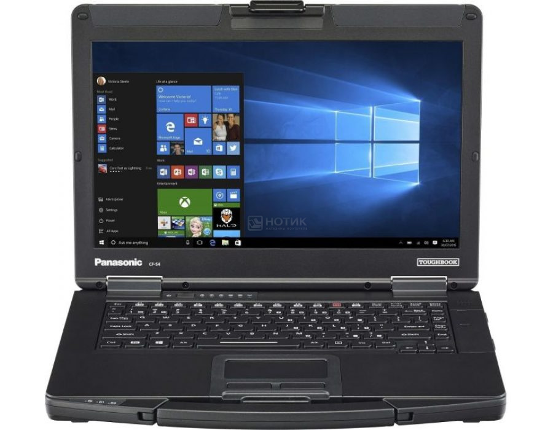

Panasonic
Ноутбук Panasonic TB CF-54mk3, CF-54H2273T9

Краткая информация о товаре
Panasonic TB CF-54mk3, построен на базе процессора Intel Core i5, и обладает сбалансированной конфигурацией рабочего компьютера, в первую очередь, обеспечивая стабильную и высокопроизводительную работу. Работа и развлечения – все в одном! Благодаря графической карте Intel HD Graphics 620, и оперативной памяти 4 ГБ, модель Panasonic TB CF-54mk3 будет весьма привлекательна для требовательных пользователей.
Характеристики ноутбука
Процессор: Intel Core i5 7300U (Skylake) 2.6 ГГц
Количество ядер: 2
Кэш-память: 3 МБ
Оперативная память: 4 ГБ DDR4-2133 МГц
Экран: 14" TN (LED) Матовый
Разрешение: 1920x1080 Full HD
Видеокарта: Intel HD Graphics 620, 64 МБ
Звук: Intel High-Definition Audio
Накопитель: 256 ГБ SSD, Тип накопителя: SSD
Связь: LAN 10/100/1000
Беспроводная связь: Bluetooth 4.0, WiFi (802.11 b/g/n/ac)
Порты: 3 x USB 3.0, Line-out, Mic-in, HDMI, COM, VGA
Слоты расширения: Картридер SD/SDHC/SDXC
Дополнительные устройства: Expansion bus (для dock station или port replicator)
Устройства ввода: Клавиатура Windows, Скринпад
Цвет: Серебристый
Цвет клавиатуры: Черный
Материал корпуса: Магниевый сплав
Материал крышки: Магниевый сплав
Размеры корпуса: 34.5 x 27.2 x 3 см
Вес: 2.100 кг
Батарея: Литий-ионная, емкость - 4300 мАч (до 10 ч)
Операционная система: MS Windows 10 Home (64-bit)
ВСЕ ПРАВА ЗАЩИЩЕНЫ